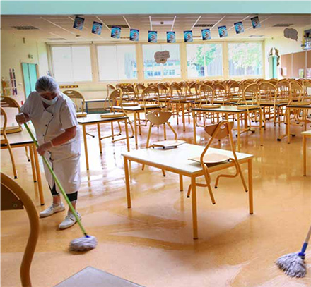

Gironde
Ecoles : le casse-tête des maires
Nettoyage et désinfection des locaux à l'école du Parc de Mérignac. PHOTO CLAUDE PETIT
Rentrée scolaire : Ils se posent mille questions et attendent des réponses. Les maires sont en première ligne pour organiser l'accueil des élèves et tous ne seront pas prêts le jour J, voire s'y refusent
Comment aménager l'espace en évitant toute promiscuité ? Comment gérer la restauration ? Repas chaud ou froid ? Quels moyens pour le nettoyage des locaux, l'accueil périscolaire ? De nombreuses questions tournent en boucle dans la tête des maires, dans la perspective de la réouverture des écoles aux enfants le 11 mai, si la situation sanitaire le permet. Au point que certains, semble-t-il, ont du mal à trouver le sommeil. Force est de constater, en tout cas, que le discours du Premier ministre, mardi soir, n'a pas répondu à toutes leurs interrogations. Au contraire. " Tout est encore très flou ", regrettait hier matin Alain Anziani, le maire de Mérignac. Lequel a tenu dès potron-minet à éclaircir un point qui le taraudait.
Édouard Philippe, en effet, n'a pas précisé quels écoliers seraient les premiers à retourner en classe. Est-il toujours question que ce soient les élèves de grande section de maternelle, de CP et de CM2 comme annoncé précédemment ? Pas forcément.
Après avoir posé la question aux autorités compétentes, l'élu socialiste a appris que davantage de souplesse était désormais possible et qu'il serait décidé dans chaque commune avec le Dasen, le directeur académique des services de l'Éducation nationale, quelles classes allaient rouvrir. Jean-Michel Blanquer l'a d'ailleurs confirmé hier matin sur une grande radio nationale. " En fait, nous ne savons pas combien d'élèves nous allons accueillir et quels locaux seront nécessaires ", s'interroge Alain Anziani.